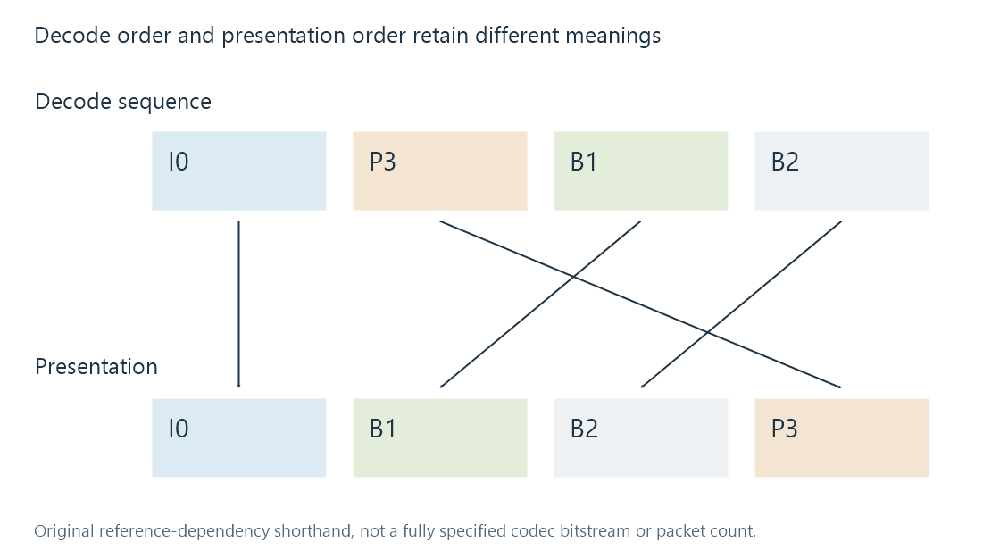

Decoding media streams
Decoding reconstructs pictures or audio samples from encoded stream data, with configuration, dependencies and timing determining when usable frames become available.
A decoder turns encoded data into reconstructed pictures or audio samples. It needs the relevant codec configuration and valid input data; it may also need reference information from other parts of the stream.
That makes decoding a different operation from reading a container's stream list. A probe can identify a codec without reconstructing every later picture.
Packets are not necessarily displayed frames
A demuxer supplies encoded packets. A decoder supplies frames in its output representation. The relationship need not be one packet in, one frame out.
A packet can contribute partial data, supply configuration or contain data associated with several outputs. A decoder can retain input while waiting for dependencies and can later produce buffered output.
FFmpeg's send/receive API documents this decoupled relationship. It is a useful reference for why a program must handle “input accepted, no frame yet” without treating every such result as a decoding failure.
Decode order can differ from presentation order
In an original illustrative picture sequence:
| Picture label | Presentation position | Dependency purpose |
|---|---|---|
| I0 | 0 | Starting independently coded picture |
| B1 | 1 | A picture using surrounding reference context |
| B2 | 2 | Another picture using surrounding reference context |
| P3 | 3 | Later reference picture |
A decoder can need P3 before reconstructing B1 and B2. The encoded/decode sequence can therefore be I0, P3, B1, B2, while presentation remains I0, B1, B2, P3.

The shorthand is not a complete H.264 or HEVC bitstream specification. Packet timestamps and reference dependencies supply the real ordering context.
A player presenting the pictures immediately in decode order would show the wrong sequence. Correct reconstruction and correct scheduling are both needed.
Audio frames carry sample intervals
For an original example, a decoded audio frame containing 1,024 samples per channel at 48,000 samples per second covers:
1024 / 48000 = 0.021333... seconds
That is about 21.33 milliseconds. It is a specified example frame size, not a universal property of every audio codec or profile.
Several channels share that interval while carrying their separate samples. A six-channel frame does not last six times longer merely because it contains six sets of samples.
The raw sample representation can use different formats and channel layouts. A processing stage must interpret those properties rather than treating every decoded byte as the same kind of PCM.
Decoding needs memory and state
Reference pictures and reordered output can occupy buffers. Input configuration changes can require a different decoder state. Hardware decoding can produce frames in an accelerator's surface representation rather than immediately accessible software arrays.
Those details affect initialisation and transfers to later filters. The codec name alone does not tell a pipeline how much buffering or movement is required.
At the end of input, a decoder can still hold delayed output. Draining that state is different from receiving a new packet. A program that stops at the last input packet without handling delayed frames can truncate valid output.
A decode result has a scope
Successfully reconstructing one frame proves something about that inspected data. It does not validate every later packet, the output display path or a server's ability to sustain the requested rate.
An unavailable hardware decoder, malformed input and a slow but valid decoder also describe different failures or limitations. Playback error categories separates those observations.
In Direct Play the client still performs relevant decoding. In a server-side picture conversion, the server decodes before filtering and encoding another representation.
See Also
- How Video Compression Works
- Inter-Frame Video Prediction
- Video Reference Frames
- Video Keyframes and Random Access
- Packet Timestamps
- Decoded PCM Output
- Encoding a new media representation